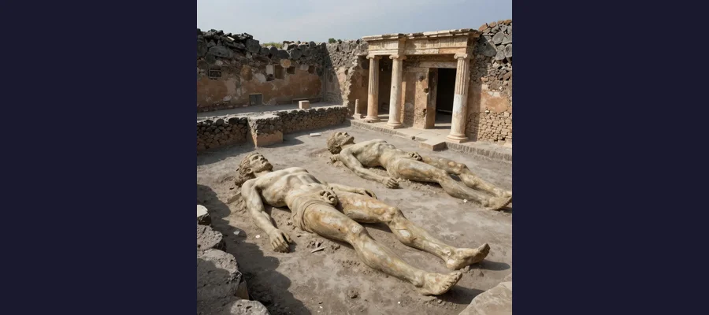
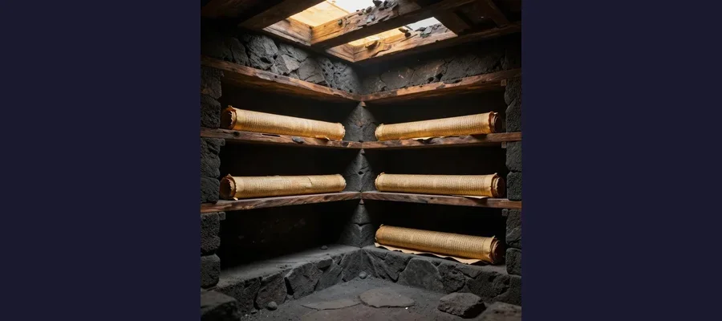

Pompeii: The City Frozen in Ash for 1,700 Years That Changed How We See Ancient Rome

On August 24, 79 AD, Mount Vesuvius erupted with apocalyptic force, burying the Roman city of Pompeii under millions of tons of volcanic ash. The city remained frozen in time for 1,700 years until its accidental rediscovery.
On a summer morning in the year 79 CE, the residents of Pompeii went about their business with no idea that the mountain looming over their city was about to destroy them. Bakeries loaded bread into their ovens. A landlord painted a fresco on his garden wall. Merchants haggled in the forum. Children played in the streets. Somewhere in the city, a graffiti artist scratched an insult about a neighbor into the plaster of a doorway. All of these details would be preserved with extraordinary fidelity, because within 24 hours, Mount Vesuvius would bury Pompeii under millions of tons of volcanic ash, pumice, and superheated gas, freezing the city at the exact moment of its death.
The eruption of Vesuvius is one of the best-documented catastrophes of the ancient world, thanks to a remarkable stroke of historical luck: a 17-year-old Roman named Pliny the Younger witnessed the event from across the Bay of Naples and later wrote two detailed letters to the historian Tacitus describing what he saw. His account, combined with nearly three centuries of archaeological excavation, has given us an intimate portrait of a Roman city in its final hours that no other ancient site can match, not the Pyramids of Giza nor the Terracotta Army of China.
Yet for all that we have learned, Pompeii continues to yield new secrets. In 2018, a charcoal inscription discovered on a renovated house wall pushed the date of the eruption from the traditional August 24 to October 17, overturning centuries of assumption. In 2023, researchers used artificial intelligence to begin reading carbonized scrolls from the nearby Villa of the Papyri, texts that had been unreadable for nearly 2,000 years. And every year, new excavations reveal details that force us to revise our understanding of how the city died and how its people lived.
The Eruption: 24 Hours That Erased a City
Mount Vesuvius had been dormant for centuries before 79 CE, so long that residents did not even recognize it as a volcano. The Greek geographer Strabo, writing a century earlier, had described its shape as resembling an amphitheater, its crater worn flat by ancient eruptions. But the mountain was not dead. A massive magma chamber was building pressure beneath it, and in the years before the eruption, a series of earthquakes rattled the region, including a major one in 62 CE that caused significant damage to Pompeii.
The eruption began sometime around midday. A column of pumice, ash, and superheated gas rocketed 33 kilometers (21 miles) into the atmosphere, expanding outward at the top like an umbrella pine tree, the shape that Pliny the Younger described and that modern volcanologists now use to classify this type of eruption as Plinian. For the next several hours, pumice and ash rained down on Pompeii, accumulating at a rate of about 15 centimeters (6 inches) per hour. By evening, the city was buried under nearly 3 meters (10 feet) of pumice.
Many residents had already fled. Those who remained, whether by choice or because they were unable to leave, sheltered in their homes as the pumice accumulated. Roofs began to collapse under the weight. Then, in the early hours of the following morning, the eruption entered its lethal second phase. The column of ash that had been billowing upward collapsed under its own weight, sending a pyroclastic surge, a superheated avalanche of gas, ash, and rock fragments, racing down the slopes of Vesuvius at speeds exceeding 300 kilometers per hour (185 mph) and temperatures approaching 300 degrees Celsius (570 degrees Fahrenheit).
When the surge hit Pompeii, anyone still alive died almost instantly. The heat was sufficient to cause brain tissue to boil and explode through the skull. The ash that followed sealed the bodies in place, creating perfect molds that would preserve the shapes of the dead for 1,700 years.
- The eruption ejected molten rock and ash at a rate of 1.5 million tons per second, releasing thermal energy equivalent to 100,000 times the Hiroshima atomic bomb
- The eruption column reached 33 km (21 miles) into the stratosphere, visible from hundreds of kilometers away
- Pumice accumulated to a depth of 2.8 meters (9 feet) in Pompeii within the first phase
- The pyroclastic surge that killed the remaining inhabitants reached temperatures of approximately 300 degrees Celsius
- The total death toll is estimated at 1,500 to 3,500 in Pompeii alone, with potentially up to 16,000 across the entire affected region
📅 August or October? The Date That Changed
For centuries, the eruption was dated to August 24, 79 CE, based on Pliny the Younger's letters. But in October 2018, archaeologists announced the discovery of a charcoal inscription on a house wall that had been undergoing renovation. The inscription read: "XVI K NOV" — the 16th day before the Kalends of November, which corresponds to October 17. The find suggested the eruption occurred in October, not August, and may explain why victims were found wearing heavier clothing and why braziers were lit, both more consistent with autumn than summer.

The haunting plaster casts of Pompeii's victims, created by pouring plaster into voids left by decomposed bodies in the ash layer
Pliny the Younger: The Eyewitness Who Gave Us the Word
Our most detailed account of the eruption comes from Pliny the Younger (c. 61–113 CE), who was staying with his mother and uncle at the Roman naval base of Misenum, approximately 30 kilometers across the Bay of Naples from Vesuvius. His uncle, Pliny the Elder, was the commander of the Roman fleet and one of antiquity's greatest naturalists. When the elder Pliny saw the strange cloud rising over the mountain, he ordered ships prepared and sailed directly toward the eruption to investigate and to rescue friends, a decision that would cost him his life.
The younger Pliny's two letters to the historian Tacitus, written roughly 25 years after the event, provide a vivid and surprisingly scientific account. He described the earthquake that shook the ground, the ash cloud shaped like an umbrella pine, the buildings swaying, the sea retreating from the shore, and the darkness that fell over the region. His descriptions were so precise that modern volcanologists named the Plinian eruption type after his account. The letters also reveal a deeply human perspective: the terror of the refugees, the panic in the streets, and the grief of a nephew who lost his beloved uncle to the catastrophe.
Pompeii vs. Herculaneum: Two Cities, Two Deaths
Pompeii and the nearby coastal town of Herculaneum were both destroyed by the same eruption, but their destruction followed very different patterns. Pompeii, located about 8 kilometers southeast of the crater, was buried primarily in pumice and ash that fell from the sky during the first phase of the eruption. Many of its buildings survived with walls and even upper stories intact, protected by the insulating blanket of volcanic material.
Herculaneum, located much closer to Vesuvius at just 7 kilometers and directly in the path of the pyroclastic flows, was buried under 20 meters (65 feet) of superheated pyroclastic material, a much denser and hotter deposit than the pumice that covered Pompeii. The intense heat carbonized organic materials, including wooden beams, furniture, and papyrus scrolls, preserving them in a form that would not have survived in Pompeii's cooler burial environment. Ironically, the hotter, more destructive burial at Herculaneum preserved more delicate organic materials than the gentler ash fall at Pompeii.
🧬 Herculaneum's Skeletons: The Boat Sheds
For centuries, it was believed that most of Herculaneum's residents had escaped before the city was destroyed. That assumption changed dramatically in the 1980s, when archaeologists excavating the ancient waterfront discovered over 300 skeletons huddled in boat chambers along the beach. These people had fled to the shore, hoping to escape by sea, only to be killed instantly when the pyroclastic surge swept through the chambers at temperatures exceeding 500 degrees Celsius. The discovery provided the first large-scale sample of Roman-era human remains and transformed our understanding of the eruption's human toll.

Carbonized scrolls from the Villa of the Papyri — a lost library now being read with AI and X-ray technology
The Casts: Faces of the Dead
The most haunting artifacts from Pompeii are not objects but people. When the pyroclastic surge killed the remaining inhabitants, their bodies fell where they stood. As the ash hardened around them and the organic tissue decomposed over centuries, the bodies left behind perfect hollow cavities in the compacted ash, preserving the exact posture and even the folds of clothing from the moment of death.
In 1863, the Italian archaeologist Giuseppe Fiorelli had an insight that would transform archaeology. Noticing that the excavators occasionally broke through into empty spaces containing skeletal remains, he realized these voids were molds of the bodies. He began pouring liquid plaster into the cavities and letting it set. When the surrounding ash was carefully chipped away, the result was astonishing: detailed plaster replicas of the victims, capturing their final poses with extraordinary precision, down to facial expressions, jewelry, and the texture of their garments.
The most famous and devastating of these casts is the Garden of the Fugitives, where 13 adults and children were found huddled together in a corner of a vineyard, their faces turned toward the city walls as if hoping to find an escape. The plaster captures their final moment of desperation with a vividness that no photograph could match. Other casts show a dog still chained to its post, a man sitting on the ground with his head in his hands, and a family grouped together in their final embrace.
Daily Life Frozen at the Moment of Death
What makes Pompeii uniquely valuable to archaeologists is not the drama of its destruction but the completeness of its preservation. The ash that killed the city also protected it. When excavators began systematic digging in the 18th century, they found a Roman town that had been sealed like a time capsule, with everyday objects still in the positions where their owners had last used them.
In the bakeries, 81 loaves of bread were found still sitting in ovens, carbonized but recognizable, stamped with the baker's name. In the thermopolia, the fast-food restaurants of ancient Rome, serving counters with built-in dolia (jars) held traces of the last meals served: stewed meats, fish, and chickpeas. Graffiti covered walls throughout the city, offering an unfiltered window into Roman private life: insults, boasts, love declarations, political slogans, advertisements for gladiatorial games, and explicit sexual commentary that scandalized Victorian-era visitors.
The Amphitheater of Pompeii, the oldest surviving Roman amphitheater (built around 70 BCE), could seat 20,000 spectators. A fresco discovered nearby depicts a riot that broke out during gladiatorial games in 59 CE between Pompeian and Nucerian fans, an event so violent that the Roman Senate banned games in Pompeii for ten years.
- Over 11,000 square meters of frescoes have been recovered, ranging from mythological scenes to garden paintings to explicit erotic art
- The city had at least 89 thermopolia (fast-food establishments), roughly one per block, showing how many residents ate out rather than cooking at home
- 81 carbonized loaves of bread were found in ovens, still identifiable and stamped with the baker's mark
- Political graffiti on walls reveals hotly contested elections with slogans like "the fruit sellers urge you to vote for Holconius Priscus for aedile"
- The city's water system included lead pipes, public fountains, and even a form of fire hydrant, all fed by an aqueduct from the Serino Springs
The Villa of the Papyri: The Library That Survived Fire
In the 1750s, workers tunneling beneath Herculaneum stumbled upon an extraordinary structure: a vast suburban villa overlooking the sea, filled with bronze statues, mosaics, and a library of approximately 1,785 carbonized papyrus scrolls. The Villa of the Papyri, believed to have belonged to Julius Caesar's father-in-law Lucius Calpurnius Piso Caesoninus, contained the only intact library to survive from the ancient world.
The scrolls were carbonized by the pyroclastic surge, rolled into lumps of charred papyrus so fragile that any attempt to unroll them destroyed the text. For over two centuries, scholars managed to unroll and read only a fraction of the collection, mostly works of Epicurean philosophy by the Greek philosopher Philodemus. But in recent years, a revolution has occurred. Using X-ray phase-contrast tomography and, more recently, machine learning algorithms, researchers have begun reading the scrolls without unrolling them.
In 2023, the Vesuvius Challenge, a competition offering prizes for AI-driven scroll reading, produced its first breakthrough when a team used machine learning to detect Greek letters inside an intact scroll. The recovered text appears to discuss music, food, and pleasure, consistent with Epicurean philosophy. The prospect of reading the remaining scrolls, many of which may contain lost works of Greek and Roman literature, has been called one of the most exciting frontiers in classical studies. If even a fraction of the villa's library contains unknown works by authors like Sophocles, Livy, or Sappho, it could fundamentally reshape our understanding of the ancient world.
📚 The Lost Library That Could Change Everything
Classical scholars estimate that the Villa of the Papyri may contain hundreds of lost texts by major Greek and Roman authors whose works did not survive the fall of the Roman Empire. The villa's main library room was only partially excavated in the 18th century; ground-penetrating radar suggests additional rooms of scrolls may remain buried. Scholars have speculated that the villa could contain lost plays by Sophocles and Euripides, lost books of Livy's History of Rome, or even unknown works by Aristotle. The race to read these scrolls without destroying them is one of the most significant archaeological challenges of the 21st century.
From Accident to Archaeology: The Rediscovery of Pompeii
Pompeii lay buried and forgotten for nearly 1,700 years. In 1592, workers digging an underground channel to divert the Sarno River encountered ancient walls and inscriptions, but no one connected them to the lost city. The first deliberate excavations began in 1748, under the direction of the Spanish military engineer Rocque Joaquin de Alcubierre, who was searching for antiquities to decorate the palace of the King of Naples. The early excavations were essentially treasure hunts: workers tunneled through the ash, stripped portable valuables, and reburied what remained.
The transformation of Pompeii from a looting site into a scientific project is largely credited to Fiorelli, who became director of excavations in 1860 and introduced systematic methods: excavating from the top down rather than tunneling, preserving buildings in place, documenting everything, and numbering each structure. His plaster-cast technique for preserving body cavities was itself an expression of this new ethos: instead of discarding the voids as nuisances, he recognized them as invaluable evidence. Since Fiorelli's reforms, Pompeii has been a model for archaeological practice, even as modern challenges like conservation, overtourism, and funding shortfalls have threatened the site.
Only about two-thirds of Pompeii has been excavated. The remaining third, roughly 22 hectares (54 acres), remains buried under volcanic deposits, and there is active debate about whether it should be excavated at all. Some archaeologists argue that future generations will have better tools and should make the decision. Others point out that the unexcavated portions may contain irreplaceable evidence about the city and its final hours. The question echoes similar dilemmas at other ancient sites, from the Terracotta Army to the unexcavated tomb of Qin Shi Huang, where the decision to wait reflects a growing recognition that excavation is itself a form of destruction.
🔥 The City That Died So We Could See How It Lived
Pompeii is the rare catastrophe that became a gift to history. The eruption that killed thousands also preserved their world with a completeness that no deliberate act of preservation could have achieved. We know what the Pompeians ate for breakfast, how they decorated their bedrooms, what jokes they scratched on their walls, and how they died. No other ancient site offers this level of intimacy with ordinary life. But Pompeii is also a reminder of how fragile civilization is. A thriving city of 15,000 people was erased in a single afternoon. The mountain that destroyed it is still there, still active, and still capable of producing a catastrophic eruption. The last major eruption of Vesuvius occurred in 1944. Today, over 3 million people live in the volcano's danger zone. The story of Pompeii is not just about the past. It is about the future, and about the uncomfortable truth that the ground beneath our feet is never as stable as it seems.
Frequently Asked Questions
How many people died in the eruption of Pompeii?
Archaeologists have found the remains of approximately 1,500 victims in Pompeii itself, with about 300 more at Herculaneum and surrounding settlements. However, the estimated total death toll across the region may have been up to 16,000, as many bodies were likely never recovered, washed away by later volcanic flows or buried in areas that remain unexcavated. Pompeii had an estimated population of 15,000 to 20,000 at the time of the eruption, and it is believed that the majority fled before the lethal pyroclastic surge arrived.
How were the plaster casts of the victims made?
In 1863, archaeologist Giuseppe Fiorelli developed a technique of pouring liquid plaster into the hollow cavities left by decomposed bodies in the hardened ash. When the plaster set, excavators carefully removed the surrounding volcanic material to reveal a detailed cast of the victim, capturing their posture, facial features, and clothing at the moment of death. Modern conservators now use a similar technique with transparent resin, which allows researchers to see the bones inside the casts.
When did the eruption actually happen?
The traditional date of the eruption is August 24, 79 CE, based on letters written by Pliny the Younger. However, in 2018, archaeologists discovered a charcoal inscription reading "XVI K NOV" (October 17) on a house wall that had been undergoing renovation, suggesting the eruption occurred on or shortly after October 17, 79 CE. Evidence from the site, including heavier clothing on victims and autumn fruits, supports the later date. The exact date remains debated among scholars.
What was daily life like in Pompeii?
Pompeii was a prosperous mid-sized Roman city with a vibrant commercial and social life. It had bakeries, taverns, fast-food shops (thermopolia), public baths, theaters, a forum, temples, and an amphitheater. Graffiti on walls reveals elections, love affairs, business transactions, and crude jokes. Residents lived in houses ranging from luxurious villas with indoor gardens and frescoed walls to cramped apartments above shops. The ash preserved everything from furniture and cooking utensils to personal items like jewelry and coins, giving archaeologists an unparalleled view of everyday Roman life.
Sources & References
- Wikipedia: Eruption of Mount Vesuvius in 79 AD — Comprehensive scientific and historical account of the eruption
- Wikipedia: Pompeii — History, excavation, and daily life in the ancient city
- Britannica: Pompeii — Archaeological site, eruption, and significance
- Pompeii Sites: The Casts — Official archaeological park documentation on the plaster body casts
- Wikipedia: Villa of the Papyri — The Herculaneum library and its carbonized scrolls
- History Skills: How the Plaster Casts of Pompeii Captured the Final Moments of AD 79
- World History Encyclopedia: Daily Life in Pompeii — Detailed analysis of food, work, and social customs
📖 Recommended Reading
Want to learn more? Check out Pompeii: The Life of a Roman Town by Mary Beard on Amazon for a deeper dive into this fascinating topic. (As an Amazon Associate, we earn from qualifying purchases.)